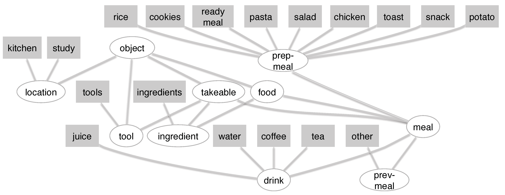
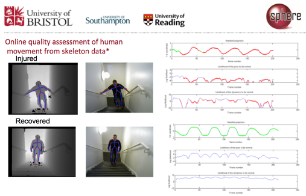

Notice - I am unable to offer Summer internships to overseas undergrduates, self-funded or otherwise.
SPHERE | PD Sensors |
Selection of Research Projects
Updates in progress...
Multi-modal Signals for Subject Re-Id in Multi-Person Environments
|
|
- Who Goes There? Exploiting Silhouettes and Wearable Signals for Subject Identification in Multi-Person Environments,
A Masullo, T Burghardt, D Damen, T Perrett, M Mirmehdi. 2nd Int. Workshop on Computer Vision for Physiological Measurement (CVPM) at IEEE International Conference of Computer Vision (ICCVW), 2019.
- CVF Version | Dataset: SPHERE-Calorie
|
What`s cooking and Why? Behaviour Recognition during Unscripted Cooking Tasks
| 
|
- Analysing Cooking Behaviour in Home Settings: Towards Health Monitoring. K Yordanova, S Ludtke, S Whitehouse, F Kruger, A Paiement, M Mirmehdi, I Craddock, T Kirste. Sensors, 19(3), 646, 2019
- Link to PDF
- What is cooking and Why? Behaviour Recognition during Unscripted Cooking Tasks for Health Monitoring. K Yordanova, S Whitehouse, A Paiement, M Mirmehdi, T Kirste, I Craddock. PerCom 2017 (Best work in progress paper award)
- Link to PDF | Dataset: SPHERE Unscripted kitchen activities
|
Great Ape Detection and Identification
Action Completion: Detection & Recognition

|
- Weakly-Supervised Completion Moment Detection using Temporal Attention. F Heidarivincheh, M Mirmehdi, D Damen. ICCV Workshop on Human Behaviour Understanding, 2019
- Arxiv PDF | CVF PDF
- Action Completion: A Temporal Model for Moment Detection. F Heidarivincheh, M Mirmehdi, D Damen. BMVC, 2018
- Arxiv PDF | Video2018 | Dataset
- Beyond Action Recognition: Action Completion in RGB-D Data. F Heidarivincheh, M Mirmehdi, D Damen. BMVC, 2016
- pdf | abstract | Video2016 | Dataset: RGBD-Action-Completion-2016
|
Calorie Expenditure Estimation for Health Monitoring

|
- CaloriNet: From silhouettes to calorie estimation in private environments. A Masullo, T Burghardt, D Damen, S Hannuna, V Ponce-Lopez, M Mirmehdi, BMVC 2018
- PDF | Code on Github
- Energy expenditure estimation using visual and inertial sensors. L Tao, T Burghardt, M Mirmehdi, D Damen, A. Cooper, S. Hannuna, M Camplani, A. Paiement, I Craddock. IET Computer Vision, 12(1), 2018.
- OA PDF @IET | SPHERE Webpage
|
Acquisition and registration of point clouds using two facing Kinects

|
- 3D Data Acquisition and Registration using Two Opposing Kinects. V Soleimani, M Mirmehdi, D Damen, S Hannuna, M Camplani, 4th International Conference on 3D Vision (3DV), 128-137, 2016
- PDF@ieeexplore | Code
|

|
- Real-time RGB-D Tracking with Depth Scaling Kernelised Correlation Filters and Occlusion Handling. M Camplani, S Hannuna, M Mirmehdi, D Damen, L Tao, T Burghardt and A Paiment. British Machine Vision Conference (BMVC), Sep 2015.
- PDF |
Video 1 |
Video 2 |
Code on Github
|
| 
|
- Online quality assessment of human movement from skeleton data. A Paiment, L Tao, S Hannuna, M Camplani, D Damen and M Mirmehdi. British Machine Vision Conference (BMVC), Sep 2014.
- PDF | Dataset | Code
|

|
- Collection of chapters on many aspects of texture analysis (pre-deep learning era!)
- Hardcover: 424 pages - Publisher: Imperial College Press (Dec. 2008) - ISBN-13: 978-1848161153
- Sample chapter: A Galaxy of Texture Features
|
Last Updated Feb. 2020